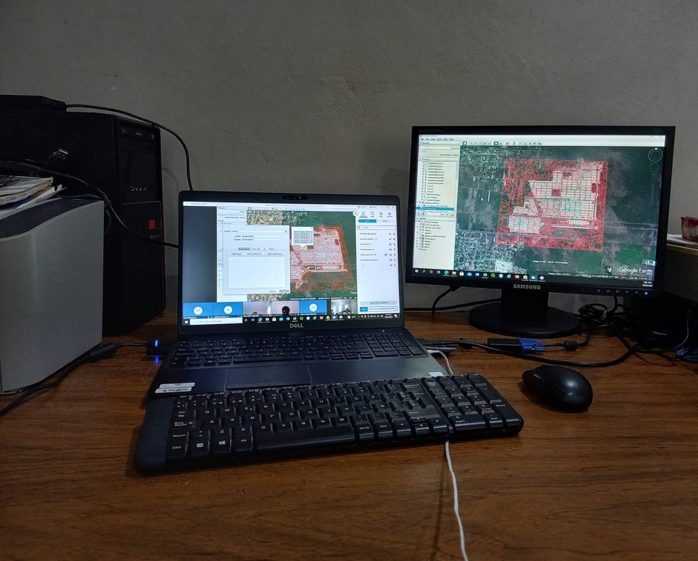
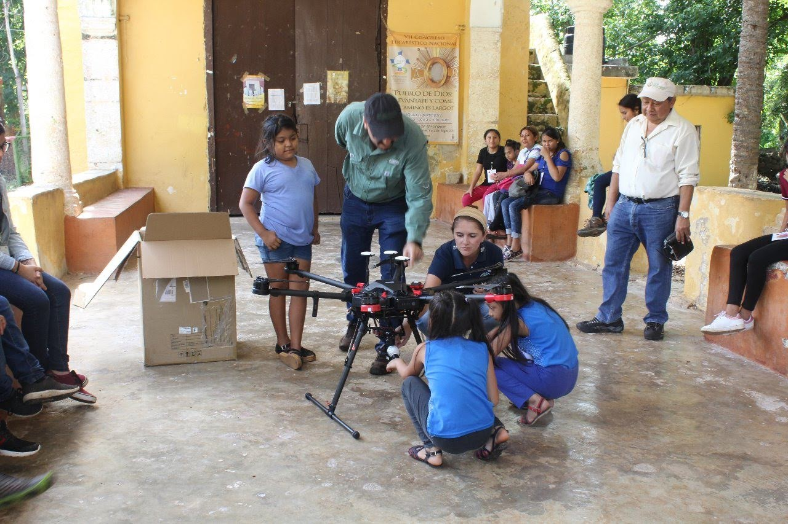
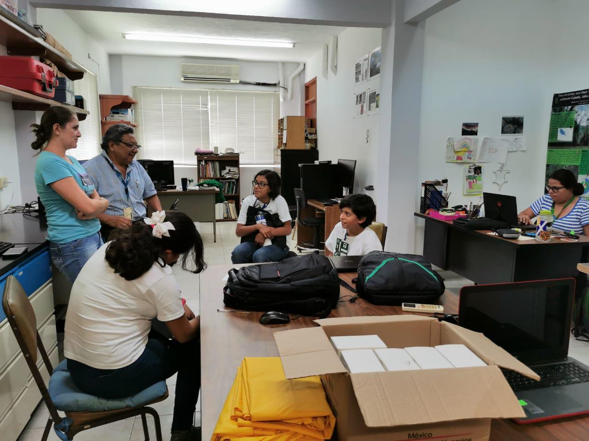
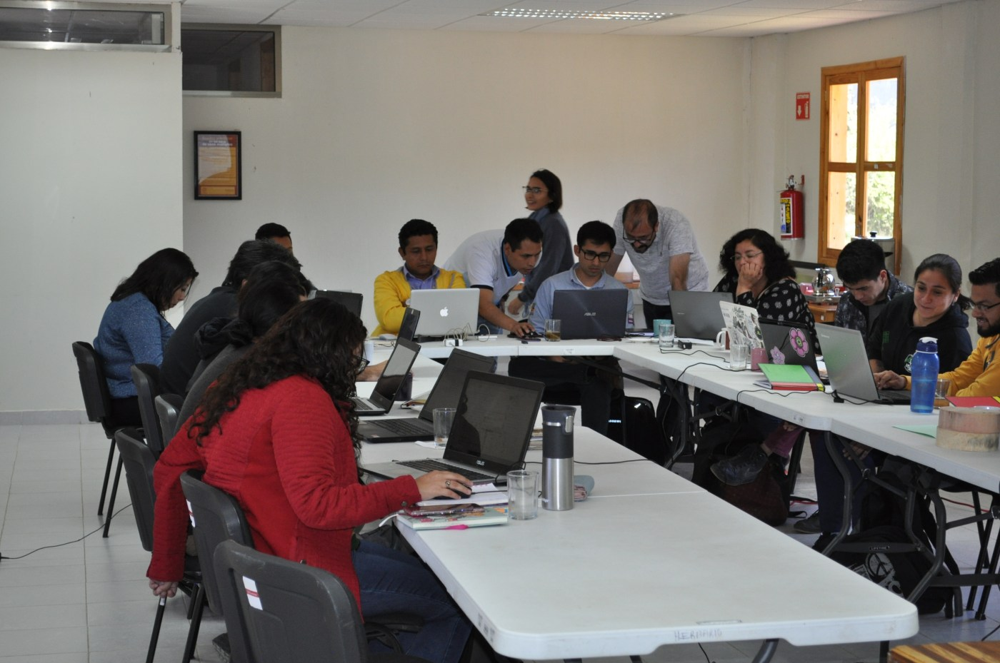
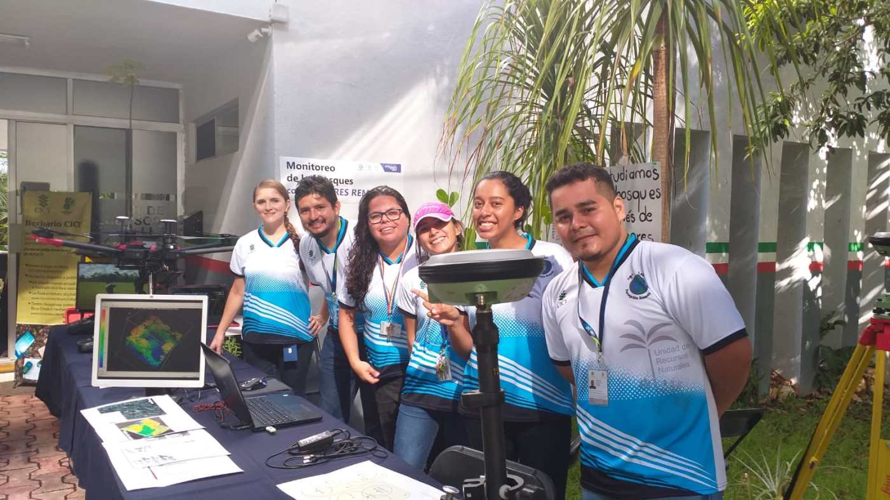
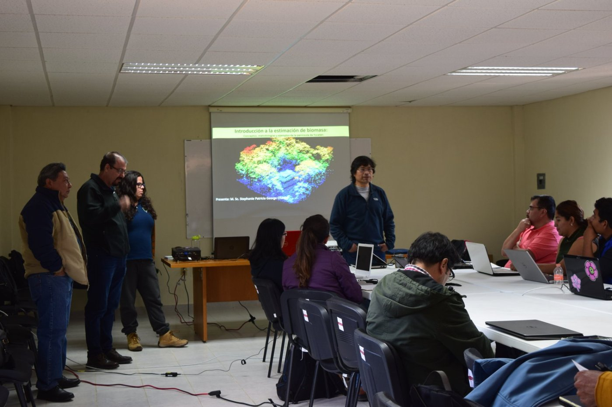
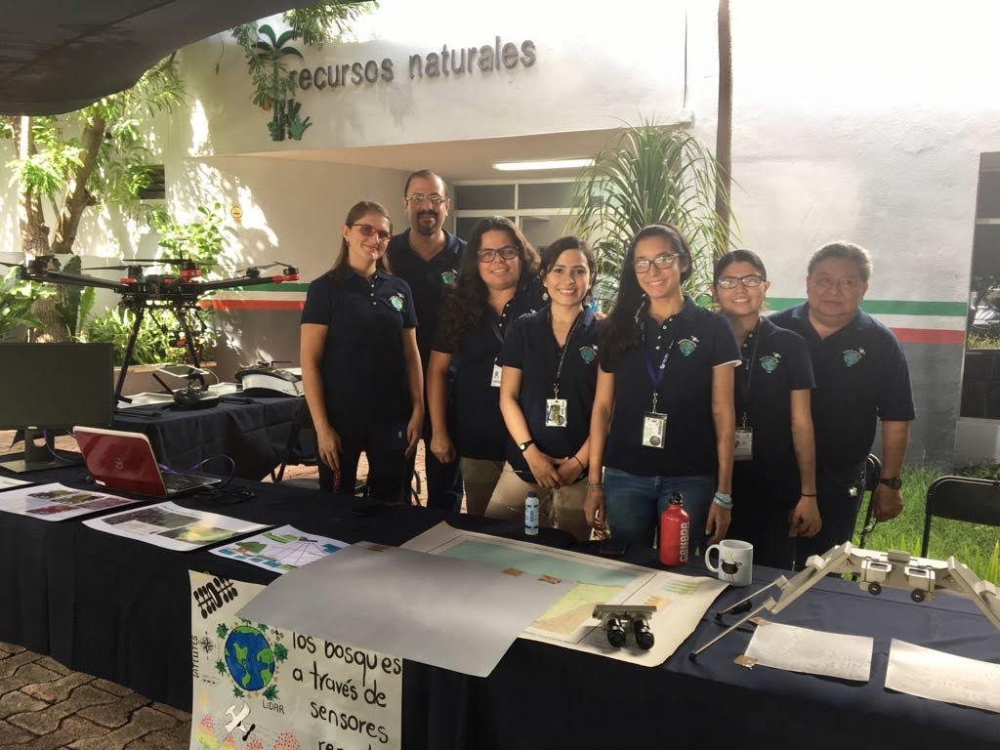

Vinculación de la investigación con los sectores público y social

Talento CICY 2021-Secundaria. proyecto “El crecimiento de la ciudad vemos, temperaturas no sabemos”.

Curso de verano STEAM 2019, “Mi Hogar visto desde arriba”

Talento CICY 2019. proyecto “Satélites y Drones: Una mirada de Mérida a través del tiempo”.

Curso “Mapeo de la biomasa aérea de los bosques usando datos de campo y ALOS PALSAR en R”. 2020.

CICY Casa abierta 2019. Exposición “Monitoreo de los bosques con sensores remotos”.

Taller “Uso de datos LiDAR para estimar variables de la estructura del bosque” 2018.

CICY Casa abierta 2017. Exposición “Observando la naturaleza desde el espacio”.
Artículos de Divulgación
- Peña-Lara, V.A., Hernández-Stefanoni, J.L. Dupuy Rada, J.M. Carnevali, G.y Sanaphre-Villanueva, L. (2026). Más allá de las especies: explorando las diferentes dimensiones de la diversidad biológica. Desde el Herbario CICY, Vol 17, Num 6: 23-28.
- HERNÁNDEZ-MARTÍNEZ, L. A., DUPUY-RADA, J. M., MEDEL-NARVÁEZ, A. L., Portillo-Quintero, C., & HERNÁNDEZ-STEFANONI, J. L. (2025). Desafíos en la estimación de la biomasa vegetal en zonas áridas: mitos, errores y posibles soluciones. Desde el Herbario CICY, 17, 226-231.
- Reyes-Palomeque, G., Andres-Mauricio J. & Hernández-Stefanoni, J. L. (2025). ¿Cuánto carbono se ha emitido con la construcción del Tren Maya?. Desde el Herbario CICY 16: 192-197 ISSN: 2395-8790.
- Hernández-Stefanoni, J. L., Andres-Mauricio J., Tun-Dzul, F., Chi-May F. & Dupuy, J.M. (2024). Fuentes de error más comunes en la estimación y mapeo de la biomasa aérea de los bosques al usar datos de campo y de sensores remotos. Consideraciones en la Península de Yucatán. Desde el Herbario CICY 17: 18-24 ISSN: 2395-8790.
- Hernández-Stefanoni, J. L., Andres-Mauricio J., Tun-Dzul, F., Hernández-Martínez, L.A., González-Muñoz, K.E., Peña-Lara, V.A. & Gamboa-Blanco, E.A. (2023). Distribución del carbono forestal y la riqueza de especies en la Reserva Ecológica Cuxtal, Yucatán, México. Desde el Herbario CICY 15: 190-196.
- Hernández-Stefanoni, J. L., Tun-Dzul, Fernando Jesús, Tarhuni-Navarro Daniela & Qui-Valencia, B. J. (2022). Diagnóstico de los artículos científicos publicados en la Unidad de Recursos Naturales del CICY. Desde el Herbario CICY 14: 92-100.
- Nepote González, Ana Claudia; Posada de la Concha, José Manuel; Tarhuni-Navarro Daniela; Varguez Ramírez, Milagros; Hernández-Stefanoni, José Luis; Salidvar-Chavez, Maria Antonieta. 11/septiembre/2020. COVID-19. Lo que los mexicanos percibimos de esta enfermedad. Saber Más: Revista de Divulgación 9: 58-69. ISSN: 2007-7041
- Tun-Dzul, Fernando Jesús; Hernández-Stefanoni, José Luis. 03/Septiembre/2020. Los Ak’alches, arboles creciendo en un hábitat inundado en la Península de Yucatán. Desde el Herbario CICY 12: 175–181. ISSN: 2395-8790
- Tarhuni-Navarro Daniela; Hernández-Stefanoni, José Luis; Posada de la Concha, José Manuel; Nepote González, Ana Claudia; Varguez Ramírez, Milagros. 11/Junio/2020. Huertos urbanos… ¿fenómeno pasajero o nuevo estilo de vida ante la pandemia de la COVID-19?. Desde el Herbario CICY 12: 119–127. ISSN: 2395-8790.
- George Chacón Stephanie Patricia; Reyes Palomeque Gabriela; Huechacona Ruíz Astrid Helena; Solórzano, R.; Virgilio-Hernández, Maria; Tun-Dzul, Fernando Jesús; Hernández-Stefanoni, José Luis. 12/diciembre/2019. El tiempo pasa y el cambio en las ciudades es notable. Caso de estudio en dos fraccionamientos de la Ciudad de Mérida, Yucatán. Desde el Herbario CICY 11: 244–250 ISSN: 2395-8790
- Hernández-Stefanoni, J.L. 7 de marzo de 2019. La unión hace la fuerza: combinación de sensores remotos para el monitoreo de bosques tropicales. Desde el Herbario CICY 11: 47–51 ISSN: 2395-8790
- Hernández-Stefanoni, J.L. 15 de marzo de 2018. Todo depende del cristal con el que se mira: la escala en ecología. Desde el Herbario CICY 10: 60–65 ISSN: 2395-8790
- Hernández-Stefanoni, J.L. 11/Mayo/2017. Del cielo a la tierra: una mirada a la diversidad de nuestros bosques. Desde el Herbario CICY 9: 84–88 ISSN: 2395-8790
- Hernández-Stefanoni, J.L. y Tarhuni-Navarro. 8-jul-2016. El uso de nuevas tecnologías para el monitoreo forestal. La crónica de hoy
- Hernández-Stefanoni, J.L. y Tarhuni-Navarro D. 2016. Drones vemos y de imágenes… sí conocemos. Desde el Herbario CICY 8: 81–84. Centro de Investigación Científica de Yucatán, A.C. ISSN: 2395-8790
- Andrade, J. L., Dupuy, J. M. & Hernández-Stefanoni, J. L. 2014. Medición intensiva de carbono forestal en Yucatán. Ciencia y Desarrollo, 40 (269): 50-55.
- Hernandez-Stefanoni, J.L. 2013. Estimación de la biomasa aérea vegetal desde el espacio. Desde el Herbario CICY 5: 27–28. Centro de Investigación Científica de Yucatán, A. C. ISSN: 2395-8790
Capitulos de Libros de Divulgación
- López-Martínez, J.O., Huechacona-Ruiz, A.H., Hernández-Stefanoni, J.L. Macario, Pedro A. (2024). Monitorear la naturaleza desde el espacio: la percepción remota y sus aplicaciones en la estimación de la diversidad biológica y la biomasa. En Javier Arellano V. Hugo Lazcano H. Mariana Callejas J. (Eds.). Una breve introducción a la percepción remota. El Colegio de la Frontera Sur.
- González Muñoz, Karina; Peña Lara Victor Alexis; Hernández Martínez, Luis A.; Tun-Dzul, Fernando Jesús; Hernández-Stefanoni, José Luis. 2024. Observando el manglar desde el espacio. En España Gamboa, E. I., & Polanco Vásquez, L. O. (Comps.). (2024). Descubriendo mi Talento 2023. Centro de Investigación Científica de Yucatán, A.C.
- Tun-Dzul, Fernando Jesús; Hernández-Stefanoni, José Luis, Reyes-Palomeque, Gabriela y Andrés-mauricio, Juan. 2021. El tiempo pasa y la ciudad crece, ¿cómo podemos medir este crecimiento? En De Gante Ayora, F. M., Herrera-Alamillo, M. A., y Román Canto, M. G. (Eds.). (2021). Descubriendo mi Talento. Mérida, Yucatán, México: Centro de Investigación Científica de Yucatán, A.C.